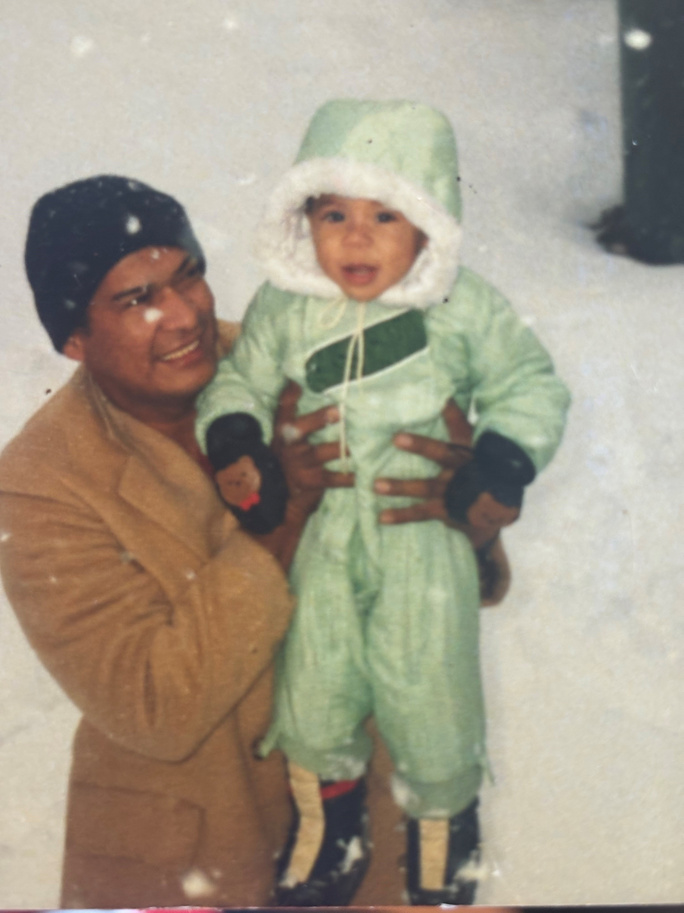
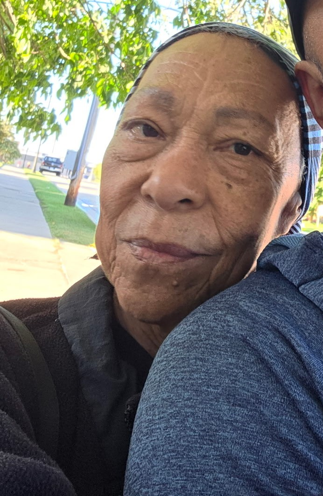
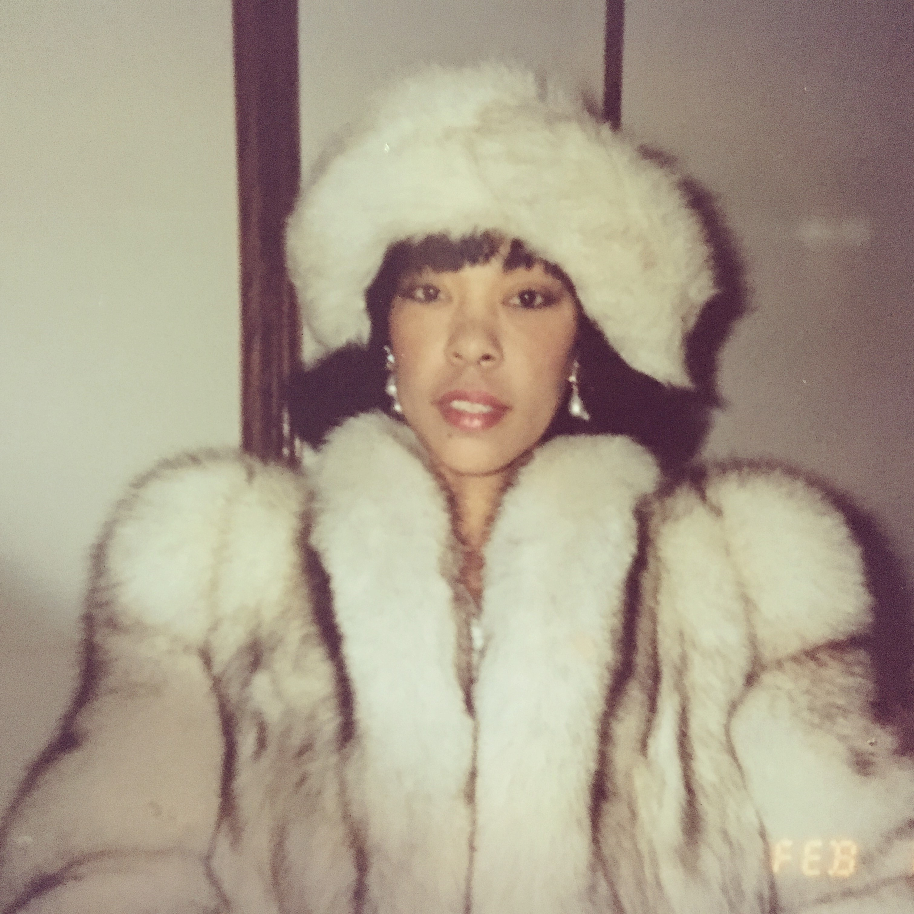

What am I really made of?
In what measure is a man?
If I could not see, hear, feel, or move; what would make me, me?
My working theory is that I am defined by my bonds to others. If I have ever said anything smart it's only because I've learned at least one thing from every person I've ever met. I have collected the people that i've learned the most from below.
My Father
Time is funny isn't it?
My father is a walking contradiction. His life is steeped in violence and pain. His parents where physically and emotionally abusive. He used to fight for dollars when he was just a child. He went to war as a teenager just so his siblings wouldn't be conscripted. He always expressed how ashamed he was that he was gifted at waging war. Somehow, against all odds, tenderness survived in this man and he taught me everything I know about empathy.
My Mother
Time isn't funny
 Usually when people meet my mother their reaction is "Ohhh, that's why you're like that". My mother has an aura that is undeniable. Her gaze is hot and sharp and it makes you feel like she can see whats on your mind at any given moment. When she speaks everybody goes quiet. My mother learned to communcate in way that is at once intimate and elegent. She taught me that the separations are an illusion. Knowledge, people, and culture is all one thing. The only thing that makes them seperate is our belief that it is so.
My Soulmate
We are simply one soul in two different bodies.